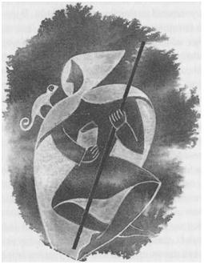

DÖRT: GÖLGENİN SERBEST KALIŞI

O bahar Ged, Vetch'i ve Jasper'ı pek göremedi, çünkü onlar artık çırakların adım bile atamadıkları Varlık Korusu'nun gizliliği içinde, Şekillendirme Ustası ile çalışıyorlardı. Ged Büyük Ev'de kalmış, Ustalarıyla, sihirbazların uyguladıkları ustalıklar üzerinde çalışıyordu. Sihirbazlar sihir yapar, yani rüzgâr çıkarırlar, hava durumunu kontrol ederler, kayıpları bulurlar, bağlarlar, büyücüdemirci veya büyücüsanatçı olarak çalışırlar, anlatıcı, okuyucu, üfürükçü veya şifacı olurlardı ama asa taşımazlardı. Geceleri hücresinde, tek başına, kitabının tepesinde mum veya lamba yerine bir tılsımışığı, Büyük Tılsımlar’da kullanılan İleri Rünleri ya da Ea Rünlerini çalıştı. Bu beceriler ona çok kolay geliyordu. Öğrenciler arasında, falanca ustanın veya filanca ustanın, Gontlu çocuğun bugüne kadar Roke'ta gelmiş geçmiş en çabuk öğrenen öğrenci olduğunu söylediği dedikoduları yayılıyordu. Ayrıca, otakın Ged'in kulağına bilgi fısıldayan gizlenmiş bir ruh olduğu yolundaki söylentiler de büyüyordu. Hatta hatta, Başbüyücü'nün kuzgununun Ged'i, ilk geldiğinde, "geleceğin Başbüyücüsü," diye selamladığı bile söyleniyordu. Bu tür öykülere inanıp inanmadıkları veya Ged'i sevip sevmedikleri bilinmez, ama arkadaşlarının çoğu Ged'i takdir ediyor, baharın uzayan akşamlarında oynadıkları oyunlarda, az da olsa keyfi gelip, oyunu idare etmek için onlarla beraber oynayan Ged'in peşi sıra gitmekten gurur duyuyorlardı. Fakat genellikle Ged demek, çalışmak, gurur ve hiddet demekti; diğerlerinden hep ayrı dururdu. Öğrenciler arasında, Vetch de ortalıklarda olmadığı için, hiç arkadaşı yoktu; bir arkadaşı olmadığının farkında bile değildi.
Ged on beş yaşına gelmişti; asa taşıyan büyücülerin Yüksek Sanatlar'ını öğrenmek için henüz çok küçüktü. Fakat gözbağcılık sanatının inceliklerini öğrenmekte o kadar hızlıydı ki, kendisi de genç bir adam olan Dönüşüm Ustası, kısa bir süre sonra ona, diğer öğrencilerden ayrı, gerçek Şekil Verme Büyüleri hakkında ders vermeye başladı. Ona, bir şey gerçekten başka bir şeye dönüştürüldüğünde, büyü devam ettiği sürece nasıl yeniden isimlendirilmesi gerektiğini ve bu değişime uğramış varlığın, etrafındaki varlıkların isimlerini ve doğalarını nasıl etkilediğini anlattı. Dönüşümün tehlikelerinden, her şeyden önce de bir büyücünün kendisini dönüştürünce, kendi büyüsüne kendisinin nasıl kapılabileceğinden söz etti. Yavaş yavaş, çocuğun anladığından emin oldukça, genç Usta ona bu gizleri sadece anlatmakla kalmadı. Dönüşüm'ün Büyük Büyüleri'nin önce birini, derken diğerini öğretti ve çalışması için Şekillendirme Kitabı’nı verdi. Aslında hiçbir kötü niyeti yoktu, ama bunu, düşüncesizce, Başbüyücü'nün bilgisi dışında yapmıştı.
Ged artık Çağrı Usta'yla da çalışıyordu; fakat Çağrı Usta, öğretmekte olduğu derin ve kasvetli büyüyle katılaşmış ve yaşlanmış sert bir adamdı. O gözbağıyla değil, sadece gerçek büyüyle uğraşıyordu; ışığın, ısının, mıknatısları çeken ve insanların ağırlık, biçim, renk ve ses diye algıladığı güçlerin, çağrılması ile: O güçler ki evrenin sonsuz ve engin enerjisinden elde edilen ve hiç kimsenin büyüsü veya kullanımı ile bitmeyecek ve dengeleri bozulamayacak, gerçek güçlerdi. İklimcilerin ve Denizci Ustaları'nın, rüzgârlara ve denize seslenişleri öğrencilerinin zaten öğrenmiş oldukları hünerlerdi. Ama öğrencilere, gerçek büyücülerin bu büyüleri ancak çok zorunlu zamanlarda kullandıklarını, bu tür dünyevi güçleri çağırmanın, parçası oldukları dünyayı değiştirmek demek olduğunu öğreten oydu. "Roke'ta yağmur, Osskil'de kuraklık anlamına gelebilir," diyordu, "Doğu Uçyöreleri’nde sakin bir hava, Batı'da fırtına demek olabilir. Tabii, ne yaptığınızı tam olarak bilmiyorsanız."
Gerçek nesnelerin ve yaşayan insanların çağrılmasına, ölülerin ruhlarının uyandırılmasına ve Görünmeyen'e yapılan dualara; yani Çağrı Usta'nın sanatının ve bir büyücünün gücünün sınırı anlamına gelen bu büyülere gelince; bunlardan öğrencilerine pek söz etmiyordu. Bir iki kere Ged, onun bu tür sırlardan konuşmasını sağlamaya çalıştı ama Usta ona, Ged huzursuz oluncaya kadar uzun uzun, kötü kötü baktı ve hiçbir şey söylemedi.
Gerçekten de Ged bazen, Çağrı Usta'nın öğrettiği daha önemsiz büyülerle çalışırken bile huzursuz oluyordu. İrfan Kitabı'nın bazı sayfalarında, bazı eski kelimeler vardı ki daha önce hangi kitapta gördüğünü hatırlamamasına rağmen, ona hiç de yabancı gelmiyordu. Çağrı büyülerinde tekrarlanması gereken bazı belirli cümleler vardı ki, onları tekrar etmekten hoşlanmıyordu. Bunlar ona, örneğin, kapısı kapalı, karanlık bir odada, kapının bulunduğu taraftaki köşeden, kendisine doğru ilerleyen gölgeleri hatırlatıyordu. Çabucak bu tür hatıraları ve düşünceleri bir kenara atıp işine devam ediyordu Ged. Kendi kendine, bu tür korku ve karanlık dolu anların, kendi cahilliğinin gölgelerinden başka bir şey olmadığını söylüyordu. Ne kadar öğrenirse, o kadar az korkacaktı. Sonunda, bir Büyücü olarak gücünün doruğuna erdiğinde, dünyadaki hiçbir şeyden, hem de hiçbir şeyden korkmayacaktı.
O yazın ikinci ayında, tüm okul tekrar Büyük Ev'de Uzun Dans'ı ve Ay’ın Gecesi'ni kutlamak için toplandı. O yıl, her iki bayram, birbirini izleyen gecelere denk gelmişti, bu her elli iki yılda bir böyle olurdu. Yılın en kısa dolunayının olduğu ilk gece boyunca kırlarda flütler çalındı. Thwil'in dar sokakları davul sesleri ve meşalelerle doldu. Şarkı nağmeleri Roke Körfezi'nin mehtaplı sularının üzerine yayıldı. Ertesi gün güneş doğarken, Roke’un okuyucuları, Havnor'un beyaz kulelerinin nasıl yapıldığını ve Erreth-Akbe'nin, Eski Ada Ea'dan başlayarak, tüm Adalar Diyarı'm ve Uçyöreler'i gezdikten sonra en nihayet Açık Deniz'in kenarındaki Batı Uçyöreleri'nin sonunda, ejderha Orm ile karşılaştığı yere kadar yapmış olduğu yolculuğu anlatan Erreth-Akbe'nin Kahramanlıkları adlı uzun şarkıyı söylemeye başladı. Şarkının anlattığına göre, Erreth-Akbe'nin kemikleri, Selidor'un ıssız sahilinde, ejderhanın kemiklerinin arasında bulunmaktadır; fakat Havnor kulesinin tepesine saplanmış olan kılıcı, güneş İç Deniz'in üzerinden batarken, kıpkızıl yanar. Şarkı bitince Uzun Dans başladı. Kasaba halkı, Ustalar, öğrenciler ve çiftçiler; kadın erkek hep beraber, akşam karanlığında, davulların, flütlerin ve gaydaların eşliğinde, Roke'un tozlu yollarından deniz kıyısındaki kumsallara kadar dans ettiler. Dans ede ede denizin içine kadar girdiler; böylece gece mehtapta eridi; müzik sesi sahile vurup kırılan dalgaların sesleri içinde yitti. Doğu ışımaya başlayınca sahilden ve yollardan geri geldiler; bu kez davullar vurmuyor fakat flütler yumuşak ve tiz sesleriyle çalmaya devam ediyordu. Adalar Diyarı'nın her yanında bu böyle olmuştu o gece: Denizin ayırdığı karaları tek bir dans, tek bir müzik birbirine bağlamıştı.
Uzun Dans bitince insanların çoğu, akşam beraberce yemek ve içmek için, günü uyuyarak geçirdiler. Çıraklar ve sihirbazlardan oluşan bir grup genç, Büyük Ev'in avlusunda ayrı bir eğlenti düzenlemek için yemeklerini yemekhaneden alıp dışarı çıkmışlardı. Kule'den bayramın şerefine izin alıp gelmiş ve hatta bu bayram için Kurremkarmerruk'u bile çıkartıp buraya getirmeyi başarmış olan yedi sekiz çocuk ile Vetch, Jasper ve Ged'den oluşan bir gruptu bu. Aynı kral ziyafetlerindeki gibi, yiyorlar, içiyorlar ve eğlence olsun diye sihirbazlık numaraları yapıyorlardı. Oğlanlardan biri avluyu yüzlerce tılsımışığı yıldızıyla donatmıştı; mücevher renklerine bürünmüş yıldızlar, gençlerle gerçek yıldızlar arasında, yavaş ama kesintisiz hareketlerle salmıyorlardı. Bir grup oğlan yeşil alevden toplarıyla ve toplar yaklaştıkça sıçrayan ve hoplayan lobutlarla, bowling oynuyorlardı. Tüm bu süre içerisinde de Vetch, havada bağdaş kurmuş, kızarmış tavuk yiyordu. Genç oğlanlardan biri onu yere çekmeye çalıştı ama Vetch, gayet sakin, gülümseyerek biraz daha yukarı, onun erişemeyeceği bir yere çıktı. Ara sıra bir tavuk kemiği atıyor; kemik bir baykuşa dönüşerek bağıra bağıra hareket halindeki yıldızların arasında uçuşuyordu. Ged baykuşların arkasından, ekmek kırıntılarından yaptığı okları atıyor ve kuşları yere düşürüyordu; baykuş ve oklar yere, birer gözbağı olarak değil, ekmek kırıntısı ve kemik olarak değiyordu. Ged havada duran Vetch’e yetişmek istiyor fakat sihirin anahtarını bilmediğinden havada durabilmek için kollarını çırpmak zorunda kalıyordu. Herkes onun uçuşuna, kanat çırpışına ve oraya buraya toslamalarına gülüyordu. O da bu kahkahaların hatırına, kendisi de onlarla birlikte gülerek, şaklabanlığına devam ediyordu, çünkü bu dans, müzik, mehtap ve büyüyle dolu iki geceden sonra her şeye açık, çılgın ve uçuk bir hale gelmişti.
En sonunda yavaşça, Jasper'ın yanında ayaklarının üzerine kondu. Tüm bu olaylar sırasında hiç gülmemiş olan Jasper, "Uçamayan bir Atmaca..." diyerek yanından ayrıldı.
"Ya Jasper,* değerli bir taş mıdır?" dedi Ged dişlerinin arasından. "Ey sihirbazlar Mücevheri, ey Havnor cevheri, parla bize!"
* Jasper, İngilizcede yeşime benzeyen bir taşın adıdır, (ç.n.)
Tılsımışıklarını havada tutan oğlan bir tanesini dans etsin ve parıldasın diye Jasper'ın başının üstüne yolladı. Her zamanki soğukkanlılığını koruyamayan Jasper hiddetle, elinin bir hareketiyle ışığı başından savıp söndürdü. "Çocuklardan, gürültüden ve ahmaklıktan bıktım," dedi.
"Yaşlanıyorsun oğlum," dedi Vetch yukarıdan.
"Sessizlik ve kasvetse, istediğin," diye söze girdi genç oğlanlardan biri, "her zaman için Kule'ye gidebilirsin."
Ged'se ona, "İsteğin ne, o halde Jasper?" dedi.
"Kendime denk insanlarla bir arada olmak istiyorum," dedi Jasper. "Haydi Vetch. Bırak da çıraklar oyuncaklarıyla oynasınlar."
Ged dönerek Jasper’ın yüzüne baktı. "Sihirbazların, çıraklardan ne farkları varmış?" diye sordu. Sesi çok sakin olmasına rağmen, diğer çocuklar aniden sessizleştiler; çünkü aralarındaki kin, Ged'in sesinde, aynı Jasper'ınkinde olduğu gibi, kınından çıkan kılıcın sesi kadar net ve açıkça duyuluyordu.
"Güç!" dedi Jasper.
"Gücümle gücünü, teke tek yarıştıracağım."
"Bana meydan mı okuyorsun?"
"Sana meydan okuyorum."
Vetch o zaman yere atlayarak, asık bir yüzle ikisinin arasına girdi. "Sihirbazlık düellosu bize yasaktır, bunu siz de biliyorsunuz. Kesin artık!"
Ged ile Jasper seslerini çıkarmadan durdular; her ikisinin de Roke kuralını bildikleri doğruydu; ayrıca Vetch'in sevgiden, kendilerinin ise nefretten böyle davrandıklarını da biliyorlardı. Yine de hiddetleri yatışmamış, sadece duraklamıştı. Derken, Jasper, sanki sadece Vetch'in duyması için biraz kenara çekilerek, "Keçi çobanı arkadaşına, kendisini koruyan kuralı bir kez daha hatırlatsan iyi olacak. Suratı pek asıldı. Yoksa onun meydan okumasını ciddiye mi alacağımı zannetti? Keçi kokan, İlk Dönüşüm'ün ne olduğunu bile bilmeyen bir çırağın meydan okumasını?" dedi.
"Jasper," dedi Ged, "benim ne bilip bilmediğimi sen nereden biliyorsun?"
Bir anda, kimse söylenen bir kelime duymadığı halde, Ged gözler önünden yok oldu; biraz önce durduğu yerde, çığlık atmak için eğri gagasını açmış, büyük bir şahinin süzüldüğü görüldü, sonra tekrar, oynaşan meşalenin ışığı altında, koyu gözleriyle Jasper'ı süzen Ged belirdi.
Jasper hayret içinde bir adım geriledi; ama sonra omuzlarım silkti ve bir tek söz söyledi: "Gözbağı."
Diğerleri aralarında mırıldandılar. Vetch, "Bu gözbağı değildi. Gerçek bir dönüşümdü. Ve bu kadarı da yeter. Jasper, dinle..."
"Bu sadece, Usta'nın arkası dönükken, Şekillendirme Kitabı'na göz attığını kanıtlar. E, ne olmuş yani? Devam et keçi çobanı. Kendi başına örmeye başladığın bu çorabı sevdim. Benimle eşit olduğunu kanıtlamaya çalıştıkça, ne mal olduğun ortaya çıkıyor."
Bunun üzerine Vetch Jasper'a arkasını dönüp yumuşak bir sesle Ged'i çağırdı: "Çevik Atmaca, çocuk olma, bırak bunları, benimle gel..."
Ged arkadaşına bakıp gülümsedi, ama tüm söylediği, "Benim için Hoeg'i bir süre tutabilir misin?" oldu. Her zamanki gibi omuzunda duran otakı, Vetch’in elleri arasına bıraktı. O güne kadar kendisine Ged'den başka kimsenin dokunmasına izin vermeyen hayvan, bu kez Vetch'e gitti; koca gözlerini sahibinden hiç ayırmadan, Vetch'in kolundan yukarı tırmanarak omuzuna sindi.
"Şimdi," dedi Ged, Jasper'a biraz önceki gibi sakin bir sesle, "benden üstün olduğunu kanıtlamak için ne yapacaksın Jasper?"
"Benim bir şey yapmama gerek yok keçi çobanı. Ama yine de yapacağım. Sana bir hak, bir olanak sağlayacağım. Kıskançlık seni bir kurt gibi kemiriyor. Bu kurdu ortaya çıkaralım. Bir keresinde, Roke Tepesi'nde, Gontlu büyücülerin oyun oynamadıkları hakkında atıp tutmuştun. Şimdi gel, Roke Tepesi'nde, onların ne yaptıklarım göster bize. Ondan sonra, belki ben de sana bir sihir gösteririm."
"Bak onu görmek isterim işte," diye cevap verdi Ged. Ged'in tepesinin, en ufak bir küçümseme veya hor görme imasında bile attığını bilen genç öğrenciler, şimdiki bu soğukkanlılığını hayretle izliyorlardı. Vetch ise onu, hayretle değil, büyüyen bir korkuyla izliyordu. Bir kez daha aralarına girmeye çalıştı ama Jasper, "Gel, aramıza girme Vetch. Sana tanıdığım bu hakkı nasıl kullanacaksın keçi çobanı? Bize bir gözbağı mı yapacaksın, ateşten bir top mesela, yoksa keçileri hastalıklardan koruyan bir tılsım mı?" dedi.
"Sen ne yapmamı isterdin Jasper?"
Büyük oğlan omuzlarını silkti, "İstersen ölüler arasından bir ruh çağır."
"Çağırırım."
"Çağıramazsın." Aniden köpüren hiddeti kibirini bastıran Jasper, bakışlarını Ged'e dikti. "Çağıramazsın. Bunu yapamazsın. Habire atıp tutuyorsun..."
"Adım üzerine yemin ederim ki çağıracağım."
Bir an için hepsi taş kesildi.
İstese onu durdurabilecek olan Vetch'in elinden kurtularak, arkasına bile bakmadan avludan çıktı Ged. Tepelerinde dans etmekte olan tılsımışıkları karardı ve yere indi. Jasper bir an için tereddüt ettikten sonra Ged'in peşinden gitti. Diğerleri, sessizce, merakla ve korkuyla, arkadan takip ettiler.
Roke Tepesi, ay henüz doğmadığı için, yaz gecesinin karanlığına doğru tırmanıyordu. Birçok mucizenin yaratılmış olduğu bu tepenin varlığı, tıpkı etraflarındaki hava gibi ağırdı. Tepeye yaklaştıkça, bu tepenin köklerinin nasıl derinlere, hatta denizden bile derindeki, dünyanın çekirdeğindeki eski, kör ve gizli ateşlere kadar indiğini düşündüler. Doğudaki bayırda durdular. Tepenin doruğunda, üstlerinde, siyah otların üzerinde yıldızlar asılı duruyordu. Hiç rüzgâr esmiyordu.
Ged, bayır yukarı, diğerlerinden birkaç adım öteye gidip dönerek berrak bir sesle "Jasper! Kimin ruhunu çağırayım?" dedi.
"Kimi istersen onu çağır. Seni hiçbiri dinlemeyecektir." Jasper'ın sesi titriyordu, belki de kızgınlıktan. Ged yavaşça, alay ederek cevap verdi: "Korkuyor musun?"
Bir cevap verdiyse bile Jasper'ın cevabını dinlemedi. Artık Jasper'la ilgilenmiyordu. Bir kez Roke Tepesi'ne çıktıktan sonra öfke ve nefret yerini kesin bir güvene bırakmıştı. Kimseyi kıskanmaya ihtiyacı yoktu. Bu gece, bu karanlık büyülü topraklarda, gücünün her zamankinden daha büyük olduğunu biliyordu. Bu güç onu, titretinceye kadar, zorlukla denetim altında tutulabilen bir kuvvet hissiyle dolduruyordu. Artık Jasper'ın, kendisinden çok aşağıda bulunduğunu, belki de onu buraya, bir rakip olarak değil de sadece kaderinin bir hizmetkârı olarak getirmek için gönderilmiş olduğunu biliyordu. Ayağının altında tepenin köklerinin, derinlere, ta derinlere, karanlığa doğru gittiğini hissetti; başının üzerinde yıldızların uzak ve kuru ateşlerini gördü. Bunların arasındaki her şey ise, onun emrinde, onun hizmetindeydi. Dünyanın tam ortasında duruyordu.
"Korkma," dedi gülümseyerek. "Bir kadının ruhunu çağıracağım. Bir kadından korkmana gerek yok. Elfarran'ı çağıracağım, Enlad'ın Kahramanlıklarında anlatılan zarif kadın."
"O kadın binlerce yıl önce öldü, kemikleri Ea Denizi’nin dibinde yatıyor. Sonra belki öyle bir kadın hiç yaşamamıştır."
"Yıllar ve uzaklıklar ölüler için bir şey ifade eder mi? Şarkılar yalan mı söylüyor?" dedi Ged, aynı alaycı ve kibar tonla; sonra da "Ellerimin arasındaki boşluğa iyice bak," diyerek dönüp kıpırdamadan durdu.
Çok yavaş ama haşmetli bir hareketle kollarını uzattı. Bu, duaların başında yapılan bir karşılama hareketidir. Ve konuşmaya başladı.
Bu Çağırma Büyüsü'nün sözlerini, iki yıl kadar önce Ogion'un kitaplarından birinde okumuş ve o günden beri de bir daha hiç görmemişti. O zaman büyünün sözlerini karanlıkta okumuştu. Şimdi, buradaki karanlıkta, o gece önünde açık duran sayfadan okur gibi tekrar okudu. Ama şimdi yüksek sesle okuduğu her kelimenin ne anlama geldiğini kavrıyor; büyünün, sesi, bedeni ve ellerinin hareketleriyle nasıl örülmesi gerektiğini açıklayan işaretleri görebiliyordu.
Öbür oğlanlar konuşmadan, titremelerini saymazsak kıpırdamadan, durmuş seyrediyorlardı. Kudretli büyü, işlemeye başlamıştı. Ged'in sesi hâlâ yumuşaktı fakat değişmişti, derinden bir ahenk hâkim olmuştu. Söylediği kelimeler diğerlerine yabancıydı. Derken Ged sustu. Birdenbire otların arasından bir rüzgâr, gürleyerek esti. Ged dizlerinin üzerine düşüp yüksek sesle çağırmaya başladı. Sonra, uzanmış ellerle toprağı kucaklamak istercesine, kendisini ileri doğru attı; doğrulduğunda kucak açmış elleri ve kolları arasında, kara bir şey tutuyordu; öyle ağır bir şey ki, ayağa kalkarken harcadığı güçten dolayı sarsılıyordu. Sıcak rüzgâr, otları tepeye doğru savurarak uğuldadı. Yıldızlar parlıyorduysa bile, o anda hiçbiri bunu göremiyordu.
Büyünün kelimeleri Ged'in dudakları arasından tıslıyarak, mırıltı halinde çıkıyordu; sonra yüksek sesle ve net bir şekilde bağırdı: "Elfarran!"
Sonra tekrar aynı ismi çağırdı: "Elfarran!"
Yerden kaldırmış olduğu şekilsiz karanlık, aralandı. Aralıktan, kollarının arasından, ince bir ışık demeti parladı; ellerini kaldırdığı yere kadar uzanan belli belirsiz oval bir ışık. Bir an için, bu oval ışığın içinde, bir şekil hareket etti: Omuzundan geriye doğru bakan uzun boylu bir kadın. Kadının yüzü çok güzeldi; üzgün ve korku dolu.
Ruh sadece bir an için burada parlamıştı. Sonra Ged'in kolları arasındaki soluk oval ışık, parlaklaşmaya başladı. Genişledi ve yayıldı; dünyanın ve gecenin karanlığında, gezegenin dokusunu yırtıp açan bir yarık oldu. Bu yarıktan korkunç bir parlaklık yayıldı. Ve bu parlak biçimsiz yırtıktan, pıhtı halinde kara bir gölge gibi hızla hareket eden, iğrenç bir şey, tırmanarak doğruca Ged'in yüzüne sıçradı. Bu şeyin ağırlığı altında sendeleyen Ged kısa, boğuk bir çığlık attı. Vetch'in omuzundan her şeyi seyretmekte olan küçük otak, hiç sesi olmadığı halde, yüksek sesle çığlık atarak saldırmak istercesine ileri atıldı.
Ged'in tepesindeki dünyanın karanlığında oluşmuş yarık genişleyip uzarken, o boğuşarak ve debelenerek yere düştü. Olanları seyreden oğlanlar kaçtı; Jasper toprağa kapanarak gözlerini o korkunç ışıktan korudu. Sadece Vetch arkadaşına doğru koştu. Böylece bir tek o, Ged'e yapışmış, etlerini parçalayan, gölge kütlesini gördü. Küçük bir çocuk boyunda, kara bir hayvana benziyordu; ama bu şey sanki bir şişiyor, bir büzüşüyordu. Ne kafası vardı, ne de yüzü; sadece yakalayıp parçalamak için kullandığı dört tane pençesi vardı. Vetch dehşet içinde hıçkırmaya başladı, yine de ellerini uzatıp, o şeyi Ged'den ayırmaya çalıştı. Ama daha ona dokunamadan bağlandı, artık kıpırdayamıyordu.
Dayanılmaz parlaklık soldu ve dünyanın kenarları yavaş yavaş bir araya geldi. Yakınlarında bir ses, tıpkı bir ağacın fısıltısı veya bir çeşmenin suyunun şıkırtısı gibi, hafifçe konuşuyordu.
Yıldızlar tekrar parlamaya başladılar; yamaçlardaki otlar, yeni doğmakta olan mehtapla ağardı. Gece kurtulmuştu. Aydınlık ve karanlığın dengesi tekrar sağlanmış ve sabitleştirilmişti. Gölge-yaratık gitmişti. Ged yerde sere serpe, sırtüstü yatıyordu; kolları sanki hâlâ dua eder veya birini karşılarmış gibi açık duruyordu. Yüzü kanla kaplanmış, kararmıştı; gömleğinin üzerinde de büyük kara lekeler vardı. Omuzuna sinmiş olan küçük otak titriyordu. Tam tepesinde, cübbesi, yükselmekte olan ayın ışığıyla solgun solgun parlayan, yaşlı bir adam duruyordu: Başbüyücü Nemmerle.
Nemmerle'nin asasının ucu, Ged'in göğsünün üzerinde yaldızlar çıkararak dolanıyordu. Nemmerle bir şeyler fısıldarken, asasını nazikçe, bir kez Ged'in kalbinin üzerine, bir kez de dudaklarına değdirdi. Ged kıpırdadı; nefes alabilmek için dudaklarını araladı. Sonra yaşlı Başbüyücü asasını kaldırıp toprağa batırdı ve sanki ayakta duracak gücü kalmamış gibi başı önünde, asaya yaslandı.
Vetch, hareket edebildiğini fark etti. Etrafına baktığında, öbürlerinin de, Çağrı Usta ve Dönüşüm Ustası'nın da, oraya gelmiş olduklarını gördü. Büyük büyücülük eylemleri, bu tür adamları harekete geçirmeden, bir sonuca varmazlar. Bu adamların da gereksinim anında, çağırıldıklarında, kendilerine göre, hızla gelme yöntemleri vardır. Yine de hiçbiri Başbüyücü kadar hızlı olamamıştı. Sonunda, yardım çağırdılar; gelenlerin bir kısmı Başbüyücü'yle giderken, diğerleri, ki bunların arasında Vetch de vardı, Ged'i Şifacı Usta'nın odalarına taşıdılar.
Bütün gece boyunca Çağrı Usta, Roke Tepesi'nde nöbet tuttu. Fakat dünyanın dokusunun yırtılıp açıldığı bu yamaçlarda, hiçbir şey kımıldamadı bile. Kendi topraklarına geri tırmanabilmek için, mehtapta sürünerek yırtığı arayan hiçbir gölge görünmedi. Gölge Nemmerle'nin ellerinden; Roke Adası'nı koruyan ve çevreleyen kudretli büyü-duvarından kurtulup, kaçmıştı ama şimdi de dünyada dolaşıyordu. Dünyada, bir yerlerde saklanıyordu. Ged o gece ölecek olursa, gölge açtığı kapıyı bulmaya çalışabilir, onu ölüm âleminde de izleyebilir veya her nereden geldiyse oraya dönebilirdi. İşte Çağrı Usta bu yüzden bekliyordu Roke Tepesi'nde. Fakat Ged yaşadı.
Onu şifa odasına yatırdılar; Şifacı Usta, yüzünde, boğazında ve omuzunda bulunan yaraları sardı. Yaralar derin, büyük ve kötüydü. Yaralardan akan siyah kan, büyülere ve üzerine konan örümcek ağlarına sarılmış perriot yapraklarına rağmen, durmuyordu. Ged, kendini bilmeden, ateşte için için yanan bir dal gibi, ateşler içinde yatıyordu; onu yakan şeyi ise, hiçbir büyü soğutamıyordu.
Pek uzakta olmayan bir yerde, çeşmenin aktığı, üstü örtüsüz avluda, Başbüyücü de kıpırdamadan yatıyordu fakat o soğuktu, buz gibi soğuk. Sadece, mehtapta suyun dökülüşünü ve kımıldayan yaprakları seyreden gözleri yaşıyordu. Yanındakiler, ne büyü yapıyorlar, ne de şifa arıyorlardı. Zaman zaman kendi aralarında alçak sesle konuşuyor sonra tekrar dönüp efendilerine bakıyorlardı. O ise ay ışığı altında bir kemik kadar beyazlaşmış şahin burnu, mağrur alnı, ak saçlarıyla, kıpırdamadan yatıyordu. Başıboş büyüyü denetim altına almak ve gölgeyi Ged'den uzaklaştırmak için bütün gücünü harcamıştı. Gücüyle beraber, bedensel kuvveti de gitmişti. Ölüyordu. Fakat, yaşadığı sürece birçok kez ölümün krallığının kuru ve sarp yamaçlarında gezmiş büyük bir büyücünün ölümü tuhaf bir olaydır, çünkü ölen adam gittiği yere körü körüne değil, kendinden emin, gittiği yolları bilerek gider. Nemmerle ağacın yaprakları arasından yıldızlara baktığı zaman, yanındakiler, onun gerçekten, bu yaz günü, şafağın yaklaşmasıyla solmakta olan yıldızlara mı, yoksa tepenin üzerindeki hiçbir şafağın göremediği ve hiç batmayan diğer yıldızlara mı baktığını bilemiyorlardı.
Otuz yıldır büyücünün yoldaşı olan Osskilli kuzgun gitmişti. Kimse onun nereye gittiğini görmemişti. "Onun önünden uçuyor," dedi Şekillendirme Ustası nöbet sırasında.
Doğan gün ılık ve açıktı. Büyük Ev ile Thwil sokaklarında çıt çıkmıyordu. Öğlene doğru Okuyucular Kulesi'nin demir çanları acı acı çalıp, yüksek sesle sesleninceye kadar, hiç ses duyulmadı.
Ertesi gün Roke'un Dokuz Ustası, Varlık Korusu'nun karanlık ağaçlarının altında toplandı. Tüm Yerdeniz büyücüleri arasından yeni Başbüyücü'yü seçerken, orada bile, onlarla hiç kimse veya hiçbir güç konuşamasın ve onların ne konuştuklarını da duyamasın diye etraflarına dokuz sessiz duvar ördüler. Way'li Gensher, Başbüyücü seçildi. Derhal Roke Adası'ndan, İç Deniz yoluyla Way Adası’na, yeni Başbüyücü'yü getirmesi için bir gemi yollandı. Yelanahtarı Usta geminin kıçında durarak yelkenleri doldurması için bir büyürüzgârı çıkarttı, böylece gemi çabucak yelken açıp gözden kayboldu.
Bütün bunlardan Ged'in hiç haberi olmadı. O sıcak yaz aylarında, tam dört hafta ölü gibi yattı. Yalnız bazen bir hayvan gibi inleyip bağırıyordu. Sonunda, Şifacı Usta'nın sabırla uyguladığı tedavi sonuç vermeye, yaraları kapanmaya ve ateşi düşmeye başladı. Yavaş yavaş, tekrar duymaya başlar gibi oldu ama hiç konuşmuyordu. Güneşli bir sonbahar günü Şifacı Usta, Ged'in yattığı odanın panjurlarını açtı. Roke Tepesi'ndeki gecenin karanlığından beri, Ged hep karanlıkta kalmıştı. O an gün ışığını ve parlayan güneşi gördü. Yaralı yüzünü elleri arasına alarak ağlamaya başladı.
Kış geldiğinde bile hâlâ kekeleyerek konuşabiliyordu. Şifacı Usta da, bedensel ve zihinsel gücünü ona yavaş yavaş geri verebilmek amacıyla, onu hâlâ şifa odasında tutuyordu. Sonunda Usta onu taburcu ettiğinde baharın ilk günleri yaşanıyordu. Sadakatini bildirmesi için, onu ilk olarak Başbüyücü Gensher’e yolladı. Çünkü Gensher Roke'a geldiğinde, bu görevini yerine getirmek için okulun diğer öğrencilerine katılamamıştı Ged.
Hastalığının sürdüğü aylar boyunca, hiçbir arkadaşının onu ziyaret etmesine izin verilmemişti. Şimdi onların arasından geçerken bazıları birbirlerine "Bu da kim?" diye soruyorlardı. Ged daha önceleri canlı, çevik ve kuvvetliydi. Şimdi ise çektiği acılar nedeniyle aksak, tedirgin yürüyor, sol tarafı yara izleriyle bembeyaz olmuş yüzünü yerden kaldırmıyordu. Kendisini tanıyan tanımayan, herkesten sakınıyordu. Böylece dosdoğru çeşmenin bulunduğu avluya gitti. Bir zamanlar Nemmerle'yi beklemiş olduğu bu avluda şimdi Gensher onu bekliyordu.
Eski Başbüyücü gibi, o da beyaz bir cübbe giymişti ama Doğu Uçyöreleri'ndeki ve Way Adası'ndaki insanların çoğu gibi Gensher de kara deriliydi; kalın kaşlarının altından yönelttiği bakışları da karaydı.
Ged diz çökerek sadakatini bildirdi. Gensher bir süre sessiz kaldı.
"Ne yapmış olduğunu biliyorum," dedi en sonunda, "ne olduğunu değil. Senin sadakatini kabul edemem."
Ged ayağa kalktı, ayakta durabilmek için, elini çeşmenin yanındaki genç ağacın gövdesine yasladı. Konuşurken hâlâ zorluk çekiyordu. "Roke'tan ayrılmam mı gerekiyor efendim?"
"Roke'tan ayrılmak istiyor musun?"
"Hayır."
"Ne yapmak istiyorsun?"
"Kalmak. Öğrenmek. Kötülüğü... ortadan kaldırmak..."
"Nemmerle bile bunu başaramadı... Hayır, senin Roke'tan ayrılmana izin vermeyeceğim. Seni, şu anda, buradaki Ustaların güçleri ve kötülüğün yaratıklarını adadan uzak tutmak için oluşturulmuş savunma hattı koruyor sadece. Eğer şimdi gidersen, ortaya çıkmasına neden olduğun şey, seni hemen bulur, içine girer ve sana sahip olur. O zaman bir adam değil, bir gebbet olursun; gün ışığına çıkarmış olduğun kötü gölgenin isteklerini yerine getiren bir kukla. Kendini ondan koruyabilecek kuvvete ve bilgeliğe erişene kadar, burada kalmalısın - tabii eğer o seviyeye erişebilirsen... Şu anda bile seni bekliyor. Emin ol, seni bekliyor. O geceden sonra onu bir daha gördün mü?"
"Rüyalarımda, efendim." Ged biraz durduktan sonra, acı ve utançla konuşmaya devam etti: "Gensher Usta, büyüden çıkıp gelen ve bana yapışan şeyin... ne olduğunu bilmiyorum."
"Ben de bilmiyorum. Onun adı yok. Senin içinde doğuştan çok büyük bir güç var ve sen o gücü, denetim altında tutamadığın, sonucunda aydınlık ile karanlığın, ölüm ile yaşamın, iyi ile kötünün dengesinin nasıl etkileneceğini bilmediğin bir büyüde uygulayarak, yanlış yerde kullandın. Ve bunu da nefret ve gurur yüzünden yaptın. Sonucun kötü olduğuna şaşmamak gerek. Sen ölüler arasından bir ruh çağırdın ama onunla beraber Yaşamsızlık Güçleri'nden biri de çıkıp geldi. İsimlerin bulunmadığı bir yerden, çağırılmadan geldi. Kötülük, senin aracılığınla kötülük yapmak istiyor. Onu çağırmakta kullandığın güç, onun yararına seni etkiliyor: artık birbirinize bağlandınız. O, senin kibirinin gölgesi, senin yarattığın bir gölge. Bir gölgenin adı olur mu?"
Ged hastalıklı ve bitkin bir halde duruyordu. Sonunda, "Keşke ölseydim," dedi.
"Sen kim oluyorsun da bunu sorgulamaya cesaret ediyorsun? Nemmerle senin için öldü... Sen burada güvenliktesin. Burada yaşayıp öğrenimine devam edeceksin. Bana zeki olduğunu söylediler. Şimdi git ve ödevlerine çalış. İyi çalış. Yapabileceğin tek şey bu."
Böylece sözlerini bitirdi Gensher ve aniden yok oldu, tüm büyücüler gibi. Çeşme, güneşin altında akıyordu; Ged, Nemmerle'yi düşünerek bir süre çeşmenin sesini dinledi. Bir keresinde bu avluda, güneşin kendisine konuştuğunu hissetmişti. İşte artık, karanlık da konuşmuştu: geri alınması olanaksız bir söz.
Avludan ayrılarak Güney Kule'de, kendisi için boş tutulmuş olan eski odasına gitti. Orada tek başına oturdu. Gong yemeği haber verince gitti ama Uzun Masa'da oturan diğer çocuklarla ne konuştu, ne de yüzünü kaldırıp baktı; hatta onu büyük bir nezaketle karşılayan çocuklara bile. Böylece bir iki gün sonra, hepsi onu yalnız bıraktılar. Yalnız kalmak onun kendi dileğiydi; çünkü akılsızca söyleyeceği veya yapacağı bir kötülükten korkuyordu.
Ne Vetch, ne de Jasper, ortalıklardaydı; Ged de onların nerede olduklarını sormuyordu. Kendisini kaybetmiş olarak yattığı için yitirdiği aylar nedeniyle, daha önceleri önünde ve lideri olduğu çocuklar, artık onu geçmişlerdi. O bahar ve yaz, kendisinden küçük çocuklarla birlikte ders yaptı. Onların arasında bile parlamadı; çünkü herhangi bir tılsımın sözleri, hatta en basit gözbağı sihirleri bile ağzından duraksayarak çıkıyor; elleri de marifetlerini göstermekte tereddüt ediyordu.
Sonbaharda, bir kez daha Yalnız Kule'ye gidip, İsimci Usta ile çalışması gerekiyordu. Bir zamanlar kaçındığı bu iş, şimdi onu mutlu ediyordu; çünkü zaten onun aradığı, büyü yapılmadan geçen uzun dersler, sessizlik ve içinde hâlâ varolduğunu bildiği o gücünü kullanmasına gerek olmayan bir yerdi.
Kule'ye gideceği günün arifesinde, akşam, odasına bir ziyaretçi geldi. Kahverengi gezgin cübbesi giymiş, ucu demirli, meşe asa taşıyan biri. Büyücü asasını gören Ged, ayağa kalktı.
"Çevik Atmaca..."
Sesi duyunca Ged gözlerini kaldırdı: Karşısında duran Vetch' ti. Siyah pervasız yüzü olgunlaşmış ama yüzündeki tebessümü değişmemiş; her zamanki kadar güvenilir, her zamanki kadar sağlam... Omuzuna ise koca gözlü, parlak tüylü bir hayvan kıvrılmıştı.
"Sen hastayken hep benle kaldı, şimdi ondan ayrılacağım için çok üzülüyorum. Ve senden ayrılacağıma daha da çok üzülüyorum Çevik Atmaca. Ama eve dönüyorum. Hadi bakalım Hoeg! Gerçek sahibine git!" Vetch otakı okşayıp yere bıraktı. Hayvan gidip Ged'in ot şiltesinin üzerine oturarak küçük bir yaprağı andıran diliyle tüylerini yalamaya başladı. Vetch güldü ama Ged gülümseyemedi bile. Yüzünü saklamak için yere çömeldi ve hayvanı okşamaya başladı.
"Bana geleceğini hiç tahmin etmiyordum Vetch," dedi.
Sitem etmek niyetiyle söylememişti, ama Vetch, "Daha önce gelemedim. Şifacı Usta izin vermedi. Kıştan beri de Koru'daydım, Usta ile birlikte inzivaya çekilmiştim. Asayı almaya hak kazanıncaya kadar serbest değildim. Dinle: Sen de serbest kaldığın zaman Doğu Uçyöresi'ne gel. Seni bekleyeceğim. Oralardaki küçük köylerin halkı çok misafirperverdir, sonra büyücüleri de hoş tutarlar," dedi.
"Serbest kalmak..." diye mırıldandı Ged, gülümsemeye çalışarak; hafifçe omuzlarını silkti.
Vetch ona baktı, ama eskisi gibi değil. Daha az sevgiyle değil, ama belki, daha bir büyücü edasıyla. Kibarca, "Sonsuza kadar Roke'ta kalmayacaksın," dedi.
"Şey... belki Kule'de Usta'yla çalışırım, kitaplar ve yıldızlar arasında, kaybolmuş isimleri arayanlardan biri olurum... pek bir işe yaramasam da, zararım da olmaz, diye düşünmüştüm..."
"Belki," dedi Vetch, "ben geleceği göremem. Fakat senin önünde odalar ve kitaplar değil, uzak denizleri, ejderhaların ateş kusan soluklarını, şehirlerin kulelerini ve atmacanın yükseklerde ve uzaklarda uçarken gördüğü şeyleri görüyorum."
"Ya ardımda... ardımda neler görüyorsun?" diye sordu Ged ve konuşurken ayağa kalktı. Tepelerinde, tam aralarında duran tılsımışığı, Ged'in gölgesini arkadaki duvara ve yere düşürüyordu. Sonra başını yana çevirip kekeleyerek, "Yine de bana nereye gideceğini, ne yapacağını anlat," dedi.
"Eve gidip oğlan kardeşlerimi ve sözünü sık sık ettiğim kızkardeşimi göreceğim. Ayrıldığımda kızkardeşim daha bir bebekti. Yakında İsmi takılacak... düşünmesi bile garip geliyor insana! Sonra da küçük adaların birinde, kendime büyücü olarak bir iş bulacağım. Ah, senle oturup uzun uzun konuşmak isterdim ama oturamam. Gemim bu gece ayrılıyor ve deniz yükselmeye başladı bile. Çevik Atmaca, eğer yolun Doğu'ya düşerse, mutlaka bana uğra. Ve, eğer bana ihtiyacın olursa, beni çağır, beni adımla çağır: Estarriol."
Bunu duyan Ged yaralı yüzünü kaldırıp arkadaşıyla göz göze geldi.
"Estarriol," dedi, "benim adım Ged."
Sonra sessizce vedalaştılar. Vetch arkasını dönerek taş koridorlardan inip gitti; Roke'tan ayrıldı.
Ged bir süre, çok güzel bir haber almış da haberi sindirmek için zaman kazanmak isteyen biri gibi hareketsiz kaldı. Vetch'in ona verdiği armağan, gerçek ismini ona söylemesi, çok büyük bir şeydi.
Bir insanın gerçek ismini kendisinden ve ismini verenden başka kimse bilmez. Zamanla, eğer isterse, ismini kardeşine, karısına veya arkadaşına söyleyebilir ama o üçüncü şahıslar da, bu ismi, bir başkasının duyabileceği yerlerde kullanmazlar. Başkalarının önünde onu, diğer insanlar gibi, kullanılan adıyla, takma adıyla çağırırlar; Çevik Atmaca gibi, Vetch gibi, "tüy-yumağı" anlamındaki Ogion gibi. Basit insanlar, gerçek isimlerini çok sevip güvendikleri birkaç kişi dışında herkesten saklıyorlarsa; büyüyle ilgisi olanlar, daha tehlikeli ve tehlike altında olduklarından, çok daha fazla korumak zorundadırlar. Kim bir adamın ismini biliyorsa, onun hayatını avuçlarının içinde tutuyor demektir. Böylece, Vetch, kendine olan güvenini yitirmiş olan Ged'e, ancak gerçek bir arkadaşın verebileceği bir armağan, ona olan güveninin sarsılmamış, sarsılmaz kanıtını vermiş oldu.
Ged ot yatağının üzerine oturarak, sönerken içindeki bataklık gazı hafifçe poflayan tılsımışığının yuvarlak parıltısını söndürdü. Sanki daha önce başka hiçbir yerde uyumamış gibi keyifle dizlerine uzanıp uyumuş olan otakı okşadı. Büyük Ev sessizdi. Ged'in aklına, o günün, Ogion'un ona ismini verdiği, kendi Geçiş'inin yıldönümünün arefesi olduğu geldi. O günden bu yana dört yıl geçmişti. İsimsiz ve çıplak olarak geçtiği dağdaki kaynağın soğukluğunu hatırladı. Çocukken yüzdüğü, Ar Nehri'ndeki diğer berrak gölcükleri düşünmeye başladı; sonra dağın dik yamacındaki ormanın altına kurulmuş olan Onakçaağaç köyünü; tozlu köy sokağındaki sabah gölgelerini; bir kış akşamında, körüğün üfürmesiyle tunçustasının ateşinden çıkan alevi; havası duman ve yapılan büyülerle ağırlaşmış olan, cadının karanlık ve hoş kokulu kulübesini... On yedi yaşını doldurduğu bu akşam, tüm bunlar tek tek aklına geldi. Kısa ve kırık hayatının tüm yılları ve yerleri, aklında toplanıp bir araya, bir bütün haline geldi. Sonunda bir kez daha, bu uzun, acı ve kaybolmuş zamandan sonra, kim olduğunu ve nerede olduğunu hatırladı.
Fakat önündeki yıllarda nereye gidebileceğini göremiyor, görmeye de korkuyordu.
Ertesi sabah adayı geçmek için yola koyuldu, otak eskisi gibi omuzunda duruyordu. Bu sefer, Yalnız Kule'ye gitmek üç gününü aldı, daha önce olduğu gibi iki değil. Kuzey burnunun uğuldayan ve köpüren denizinin üzerindeki Kule'yi gördüğünde, kıpırdayacak hali bile kalmamıştı. İçerisi, tıpkı hatırladığı gibi karanlık, soğuktu; Kurremkarmerruk da yüksek taburesine oturmuş, isim listeleri çıkartıyordu. Ged'e baktı ve Ged sanki hiç oradan ayrılmamış gibi hoşgeldin bile demeden, "Git yat; yorgun adam aptal olur. Yarın, Yaratanlar’ın Girişimleri Kitabı'nı açıp, oradaki isimleri öğrenebilirsin,” dedi.
Kış sonu Ged Büyük Ev'e geri döndü. O zaman sihirbazlığı ilan edildi ve bu kez Başbüyücü Gensher sadakatini kabul etti. Bundan sonra, gözbağcılığı sanatını aşarak büyücülük asasını kazanabilmek için gerekli gerçek büyücülük eylemleri olan yüksek sanatları ve büyüleri okudu. Aylar geçtikçe büyüleri söyleme konusunda çektiği sıkıntılardan kurtuldu; ellerine eski hüneri geldi: Yine de, korku kendisine uzun ve zorlu bir ders vermiş olduğundan, eskisi kadar çabuk öğrenemiyordu. En tehlikeli büyüler olan Şekillendirme ve Yaratmanın Büyük Tılsımları'nı yaparken bile, hiçbir uğursuzluk olmadı veya kötü bir işarete rastlanmadı. Hatta zaman zaman Ged, artık rüyasında da görmediğinden, ortaya saldığı gölgenin zayıflamış veya bir yolunu bulup dünyadan kaçmış olup olmayacağını merak etmeye başladı. Fakat için için bu tür ümitlerin saflıktan başka bir şey olmadığını da biliyordu.
Ustalarından ve eski kitaplardan, serbest bırakmış olduğu bu gölge ile ilgili öğrenebileceği her şeyi öğrendi Ged. Zaten öğrenecek çok az şey vardı. Bu tür bir yaratığın ne doğrudan tarifi yapılıyor, ne de sözü ediliyordu. En fazla eski kitapların orasında burasında, gölge-yaratığa benzeyebilecek şeyler hakkında ipuçları vardı. Gölge-yaratık bir insanın ruhu değildi; Dünyanın Kadim Güçleri'nin yaratıklarından da değildi; ama yine de bunlarla bir ilgisi olabilirdi. Ged'in büyük bir dikkatle okumuş olduğu Ejderhalar Hakkında adlı bir kitapta, kuzeydeki uzak ülkelerden birinde bulunan, Kadim Güçler'den biri olan, konuşan bir taşın etkisi altına giren eski bir Ejderhalar Efendisi’nin öyküsü vardı. "Taşın emriyle," diyordu kitap, "Ölüler âleminden ölü bir ruh çağırmak için konuşmuştu. Fakat taşın iradesiyle büyücülüğü yolundan çıktığından, ölü ruhla birlikte bir de onu içten içe kemiren, onun kılığına girerek hareket eden ve insanlara zarar veren bir şey çağrılmadan geldi." Fakat kitap ne o şeyin ne olduğunu, ne de öykünün sonunda ne olduğunu yazıyordu. Ayrıca Ustalar da böyle bir gölgenin nereden gelebileceğini bilmiyorlardı: Başbüyücü yaşamsızlıktan demişti; dünyanın yanlış tarafından demişti, Dönüşüm Ustası; Çağrı Usta ise "Bilmiyorum," demişti. Çağrı Usta Ged'in hastalığı sırasında sık sık onunla oturmaya gelmişti. Her zamanki gibi ağırbaşlı ve suratsızdı ama Ged artık onun içindeki sevecenliği anlamıştı ve onu çok seviyordu. "Bilmiyorum. O şey hakkında bildiğim tek şey şu: sadece çok büyük bir güç onu çağırabilirdi; hatta belki tek bir güç... tek bir ses... senin sesin. Fakat bunun ne anlama geldiğini ben de bilmiyorum. Bunu sen bulacaksın. Bunu senin bulman gerek, yoksa ölürsün, hatta ölümden de kötü..." Sıkıntılı gözlerle Ged'e bakarken, yumuşak bir sesle konuşuyordu. "Çocukken, büyücülerin her şeyi yapabileceklerini sanıyordun. Ben de öyle sanırdım, bir zamanlar. Hepimiz öyle sanırdık. Fakat gerçek şu ki, insanın gerçek gücü, büyüyüp bilgisi arttıkça izleyebileceği yol, iyice daralıyor. Ta ki, en sonunda sadece ve sadece mutlaka gerekenden başka yapacak şeyi kalmayıncaya kadar..."
On sekizinci yaşgününden sonra, Başbüyücü, Ged'i Şekillendirme Ustası ile çalışması için yolladı. Varlık Korusu'nda öğrenilenler hakkında başka yerlerde pek konuşulmaz. Burada hiçbir büyünün işlemediği söylenir; ama zaten buranın kendisi büyülüdür. Korunun ağaçları bazen görünür, bazen görünmez; sonra bu ağaçlar her zaman Roke Adası'nın aynı yerinde de durmazlar. Korunun ağaçlarının bile, birer bilge oldukları söylenir. Şekillendirme Ustası'nın üstün büyülerini bu Koru'dan öğrendiği; ve eğer ağaçlar ölürse onun da bilgeliğinin yok olacağı ve öyle bir şey olursa, o günlerde, tarihten önce Segoy'un denizin derinliklerinden çekip çıkarmış olduğu Yerdeniz adalarının, yani insanların ve ejderhaların üzerinde yaşadığı karaların, hepsinin sular altında kalacağı da söylentiler arasındadır.
Fakat bunların hepsi kulaktan dolma bilgilerdir, büyücüler bu konuda konuşmaz.
Aradan aylar geçti ve nihayet bir bahar günü Ged Büyük Ev'e geri döndü. Bundan sonra ondan ne isteyeceklerine dair hiçbir fikri yoktu. Roke Tepesi'nin bayırlarına doğru açılan bir kapıda, yaşlı bir adam onu karşıladı. Ged'i kapının ağzında bekliyordu. İlk başta Ged onu tanıyamadı. Sonra iyice düşününce, onun, beş yıl önce, Okul'a ilk geldiği gün, kendisini içeriye alan adam olduğunu çıkarttı.
Yaşlı adam gülümseyerek onu adıyla karşıladı ve sordu: "Benim kim olduğumu biliyor musun?"
O anda Ged, hep Roke'un Dokuz Ustası dendiği halde, sadece sekizinin ismini bildiğini hatırladı: Yelanahtarı, El, Şifacı, Okuyucu, Dönüşüm, Çağrı, İsimci ve Şekillendirici. Ona hep, Başbüyücü'den, dokuzuncu Usta diye söz ediyorlarmış gibi gelmişti. Ama yeni Başbüyücü seçileceği zaman, Dokuz Usta toplanıp yapmıştı seçimi.
"Sanırım siz Kapıcı Ustasınız," dedi Ged.
"Öyleyim. Ged, sen kendi ismini söyleyerek Roke'a girmeye hak kazanmıştın. Şimdi de benim ismimi söyleyerek, buradan serbest kalmaya hak kazanabilirsin." Böyle dedi gülümseyen yaşlı adam ve bekledi. Ged sustu kaldı.
Elbette ki insanların ve varlıkların isimlerini bulmak için binlerce yol, hüner ve araç biliyordu; bu tür hünerler, Roke'ta öğrendiği şeylerin bir parçasıydı, çünkü onlar olmadan, yapılacak büyülerin çok azı işe yarardı. Fakat bir büyücünün veya Usta'nın adını bulabilmek, tamamen ayrı bir meseleydi. Çünkü bir büyücünün ismi, denizdeki balıktan daha iyi saklanır, ejderhaların ininden daha iyi korunurdu. Araştırma için yapılacak bir büyü, daha kuvvetli bir büyüyle karşılaşır; kurnazca yapılmış oyunlar, boşa çıkar; dolambaçlı soruşturmalar, dolambaçlı yoldan engellenir; zorla kullanılan kuvvet de, yıkıcı bir şekilde geri teperdi.
"Çok dar bir kapıya bekçilik yapıyorsunuz Usta," dedi sonunda Ged. "Sanırım burada, kırlarda, biraz oturup oruç tutmalıyım ki bu dar kapıdan sığabileyim."
"İstediğin kadar kalabilirsin orada," dedi Kapıcı gülümseyerek.
Böylece Ged biraz uzaklaşarak, Thwilburn'ün kıyısındaki bir akçaağacın altına oturdu. Otakını da omuzundan inip oynaması ve çamurlu nehir kıyısındaki tatlısu yengeçlerini avlaması için serbest bıraktı. Güneş geç vakitte, tüm parlaklığıyla kavuştu; bahar hayli ilerlemişti. Büyük Ev’in pencerelerinden tılsımışıklarının ve lambaların ışıkları süzülüyordu; yamaçtan aşağıda ise Thwil kasabasının sokakları karanlık içindeydi. Evlerin damlarında baykuşlar ötüyor, derenin üzerindeki loş havada yarasalar uçuyordu. Ama Ged hâlâ Kapıcı'nın ismini nasıl yapsa da öğrense diye düşünüyordu. Zorla mı, hileyle mi yoksa büyüyle mi? Düşünüp taşındıkça, işin içinden iyice çıkamaz oluyordu. Roke'ta bulunduğu bu beş yıl süresince, öğrendiği tüm tılsımlar arasından, böyle bir büyücüden, öyle bir sırrı, zorla elde edebilecek olanını ne kadar arasa bulamıyordu.
Cebinde yuvalanmış otakı ile birlikte kırlarda yatıp, yıldızların altında uyudu. Güneş yükseldikten sonra, orucunu bozmadan, Ev'in kapısına giderek kapıyı çaldı. Kapıcı, kapıyı açtı.
"Usta," dedi Ged, "isminizi sizden zorla almaya gücüm yetmez, aldatıp almaya aklım yetmez. O yüzden burada kalıp çalışmaya veya öğrenmeye devam etmeye, istediğiniz her şeyi yapmaya razıyım. Tabii eğer, kazara, bir sorumu cevaplamazsanız."
"Sor bakalım sorunu."
"Adınız nedir?"
Kapıcı gülümsedi ve ismini söyledi; ismi tekrarlayan Ged, son kez o Ev'e girdi.
Ev'den ayrıldığında ağır, lacivert bir cübbe giyiyordu. Cübbe, gitmekte olduğu Aşağı Toming kazasının bir hediyesiydi ona. Orada bir büyücüye ihtiyaçları vardı. Aynı zamanda, porsukağacından yapılmış, ucu tunç kaplı, kendi boyunca bir asa taşıyordu. Büyük Ev'in boynuzdan ve fildişinden yapılmış arka kapısını onun için açarken, Kapıcı Ged'e iyi yolculuklar diledi. Ged, sabahın berrak sularında, kendisini beklemekte olan gemiye gitmek için, Thwil'in sokaklarından aşağı doğru indi.